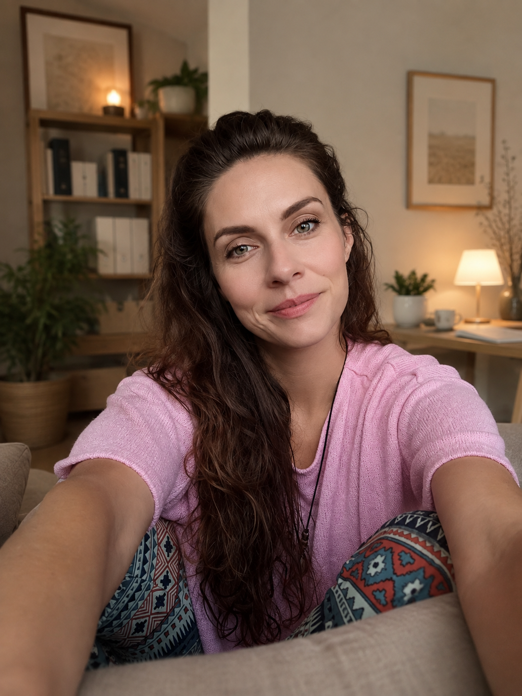
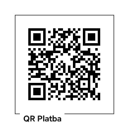

V současnosti mám volnou kapacitu a nabírám nové klienty
Individuální terapie zaměřená na rodiče v nesnázích.
V klidném prostoru v Ostravě Hrabůvce.

Jsem především rodič, sociální pedagog a vychovatel. Celým životem mě provázejí děti. Trávila jsem s nimi více času než s dospělými. Dlouho jsem přemýšlela, zda-li se pustit do dětské psychoterapie a nakonec jsem si řekla, že uchopím cestu z druhé strany a to od rodičů. Aby děti mohly rozkvést, potřebujeme začít u sebe.
Jsem také zakladatelkou Sdílené terapeutovny v Ostravě-Hrabůvce — příjemného prostoru v novostavbě obklopené zelení, kde se snažím dělat psychoterapii dostupnější a propojovat kolegy z pomáhajících profesí.
Zaměřuji se na rodiče v nesnázích. Věřím, že v sobě nesou to nejdůležitější pro změnu. Když porozumíme lépe sami sobě, vytváříme bezpečnější prostor i pro své děti. Ráda vás na této cestě citlivě provedu.
Psychoterapeutický výcvik jsem si vybrala vědomě a to v integrativní psychoterapii se zaměřením na psychosomatiku. Řečeno lidsky a srozumitelně se jedná o práci s více přístupy, které nejlépe odpovídají individuálním potřebám každého z Vás. Společně hledáme cestu, která respektuje Váš příběh, vztahy, životní zkušenosti a možnosti.
Svou činnost vykonávám v souladu s etickým kodexem ČAP a pod odbornou supervizí.
„Když dlouho nenasloucháme naší duši, tělo začne mluvit za nás, pro nás.“— Tereza Kuchtová
Projdeme si s čím přicházíte a zjistíme, jestli Vám můj způsob práce vyhovuje a jestli Vám mohu pomoci.
Pravidelná setkání tempem a délkou spolupráce, které vyhovují Vám.
Cílem je, abyste získali oporu a nadhled, se kterými terapii časem už nebudete potřebovat.
Obvyklá délka spolupráce je 5 až 20 konzultací.
Při zrušení méně než 24 hodin předem se hradí plná cena konzultace.
Platit lze na místě hotově nebo převodem.
Záleží na tématu i na tempu, které Vám vyhovuje. Někdy stačí několik setkání, jindy je vhodná spolupráce na několik měsíců. Průběžně si říkáme, kde jsme a kam dál.
To vůbec nevadí. Stačí přijít na úvodní konzultaci — společně si ujasníme, s čím přicházíte a jestli Vám terapie v tuto chvíli může pomoct.
Nejste si jistí, že je terapie pro Vás to pravé? Napište mi a společně přijdeme na to, jestli Vám terapie v tuto chvíli může pomoct.
